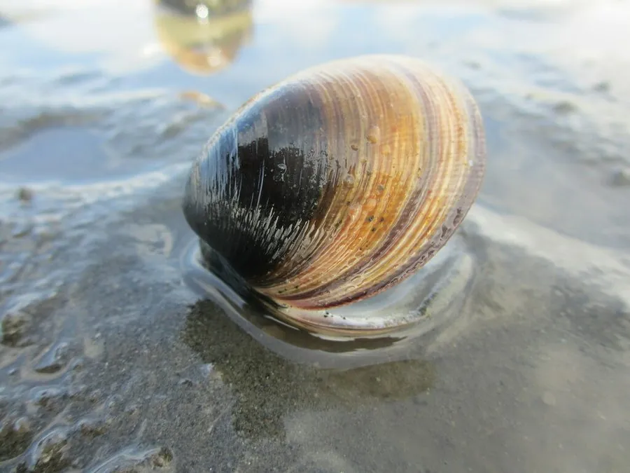

软体动物 · 动物界
青蛤 Cyclina sinensis

壳厚而圆、壳面光滑的青灰色蛤蜊，栖息在泥质滩涂，耐低氧，是中国沿海重要的养殖贝类，俗称黑蛤。
- 分类
- 门软体动物门纲双壳纲目帘蛤目科帘蛤科属青蛤属
- 栖息环境
- 潮间带至水深数米的泥质和沙泥质滩涂，喜河口软泥
- 地理分布
- 西北太平洋，包括中国南北沿海、日本和朝鲜半岛
- 保护级别
- 尚无保护级别；资源受滩涂围垦和采捕影响
物种志
青蛤的贝壳呈圆形，壳长约三至五厘米，壳质坚厚，两壳膨凸，壳面光滑，呈青灰、灰黑至黄褐色，有细密的同心生长纹，壳顶突出并向内弯曲，壳缘光滑，壳内面白色，铰合部有主齿。足部侧扁，水管较长，末端生有触手。它靠足部在泥中掘穴，滤食时把水管伸出泥面。壳质厚实，能耐受较大的温度和盐度变化。
它分布于西北太平洋，包括中国南北沿海、日本和朝鲜半岛，栖息在潮间带至水深数米的泥质和沙泥质滩涂，尤其喜欢河口附近的软泥底质，能耐受较低的盐度和溶氧。它以硅藻和有机碎屑为食，生长较慢，两至三年可达商品规格。繁殖期在夏秋，雌雄异体，幼虫经浮游阶段后附着到泥滩上。青蛤肉味鲜美，是中国沿海重要的养殖贝类，可鲜食、腌制或制罐。目前尚无保护级别，资源受滩涂围垦和采捕影响。
形态与习性
- 食性滤食硅藻和有机碎屑
- 壳长约三至五厘米，壳厚呈圆形
- 耐受性耐低盐和低氧，适应河口泥滩环境
- 栖息环境潮间带至水深数米的泥质滩涂
- 生长两至三年可达商品规格
- 利用重要养殖贝类，可鲜食、腌制或制罐
趣味知识
- 青蛤的壳又厚又硬，颜色像青铁，沿海居民因此叫它铁蛤。
- 它能在溶氧很低的泥滩里生活，靠伸长的水管从表层水中取氧。
- 青蛤生长慢但耐运输，是沿海滩涂养殖的常见品种。